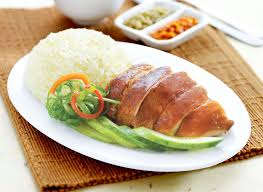

Teluk Intan's Chee Cheong Fun is different from traditional Chee Cheong Fun in a number of ways
1. Filling: Unlike the Hong Kong-style Chee Cheong Fun, which typically has shrimp or beef fillings, Teluk Intan Chee Cheong Fun often contains preserved turnip (chai poh), dried shrimp, and sometimes minced pork. The filling is savory and adds a distinct flavor to the dish.
2. No Sauce: One of the unique aspects of Teluk Intan Chee Cheong Fun is that it is usually served without the sweet or savory sauces that accompany other Chee Cheong Fun varieties. Instead, it relies on the flavors of the filling and sometimes a light drizzle of oil for taste.
The most popular Chee Cheong Fun restaurant in Teluk Intan is Liew Kee Chee Cheong Fun, which is considered the best and has been featured in multiple blogs as a tourist spot
Mee Rebus from Teluk Intan is a savory noodle dish enjoyed by locals and visitors alike.
1. The gravy for Teluk Intan Mee Rebus is rich and flavorful, made from a combination of ingredients like:
Sweet Potatoes: The gravy is often thickened with blended sweet potatoes, which give it a creamy texture and a slightly sweet flavor.
Spices and Herbs: The gravy typically includes a blend of spices such as chili, ginger, garlic, and onions. This mix adds depth and complexity to the flavor profile.
Shrimp Paste (Belacan): A touch of belacan adds umami and a hint of pungency, enriching the overall taste of the dish.
2. Special Ingredients
The ingredients used in Teluk Intan Mee Rebus are selected to enhance the dish flavor and texture:
Mee Rebus Noodles: The noodles are usually egg noodles or yellow noodles that are boiled to perfection, providing a firm texture that holds up well in the gravy.
Toppings: Common toppings include bean sprouts, boiled eggs, fried tofu puffs, and sometimes prawn fritters. These add a variety of textures and flavors to the dish.
A popular Mee Rebus spot is Restaurant Mastan Ghany which is well-known for their unique Mee Rebus and Rojak

Teluk Intan Chicken Rice is a unique combination of traditional preparation methods and specific ingredients that makes it different from other regional variants.
1. Flavorful Poached Chicken
Preparation Method: The chicken is poached to perfection, resulting in tender and juicy meat. It is often cooked using a method that maintains the natural flavors and ensures that the chicken remains moist.
Seasoning: The poaching liquid includes a combination of ingredients like ginger, garlic, and sometimes pandan leaves, which subtly infuse the chicken with aromatic flavors.
2. Signature Sauces
Teluk Intan Chicken Rice comes with a variety of sauces and condiments, each adding a different layer of flavor:
Chili Sauce: A spicy, tangy chili sauce made from red chilies, garlic, ginger, and lime. This sauce adds a zesty kick to the dish.
Ginger Sauce: A smooth, aromatic sauce made from ginger, garlic, and oil. It provides a fresh and fragrant contrast to the chicken.
A popular Chicken Rice spot is Restaurant Nasi Ayam Marvelous which is well-received by locals and tourists for its fresh chicken rice and has been featured on TripAdvisor